Producción multimedia
Video, audio, postproducción, contenido digital, eventos y transmisiones en tiempo real.
Portafolio profesional
Productor multimedia en Fundación Dei Verbum con experiencia en desarrollo web, automatización con Python, streaming, redes, servidores y ciberseguridad.
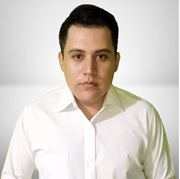
Pendragon Sistemas
Perfil
Estoy en formación como Ingeniero en Sistemas Informáticos y cuento con experiencia en desarrollo web, producción multimedia, soporte técnico y operación de transmisiones en vivo.
Actualmente trabajo en Fundación Dei Verbum como Productor Multimedia. En este rol combino producción audiovisual, sonido en vivo, streaming, coordinación técnica, mantenimiento web, automatización con Python, administración de redes y soporte institucional.
He participado en proyectos con PHP, Laravel, Python, WordPress, Adobe Audition, Premiere, OBS, vMix y herramientas de infraestructura. También he colaborado con Radio Kyrios, Banco Central de Reserva y La Luciérnaga en Costa Rica.
Video, audio, postproducción, contenido digital, eventos y transmisiones en tiempo real.
Sitios dinámicos con PHP, HTML, CSS, JavaScript, WordPress y mantenimiento continuo.
Sistemas en Python y scripts para optimizar procesos internos, recursos y tiempo.
Configuración de redes, routers Cisco, servidores Windows/Linux, virtualización y NAS.
Firewalls, políticas de seguridad, soporte preventivo, continuidad y buenas prácticas.
Trabajo con equipos multidisciplinarios, capacitación, revisión de código y soporte técnico.
Certificaciones
Validación en redes Cisco, ciberseguridad, Python, Scrum, QA, nube, Linux, Kubernetes, PHP, Laravel y herramientas multimedia.
Redes Cisco
Routing, switching e infraestructuraCiberseguridad
Buenas prácticas, control y prevenciónDesarrollo y QA
Python, PHP, Laravel y testingNube y sistemas
Linux, Kubernetes y operación técnicaExperiencia laboral
Ascenso interno
Asistente de Producción → Productor Multimedia
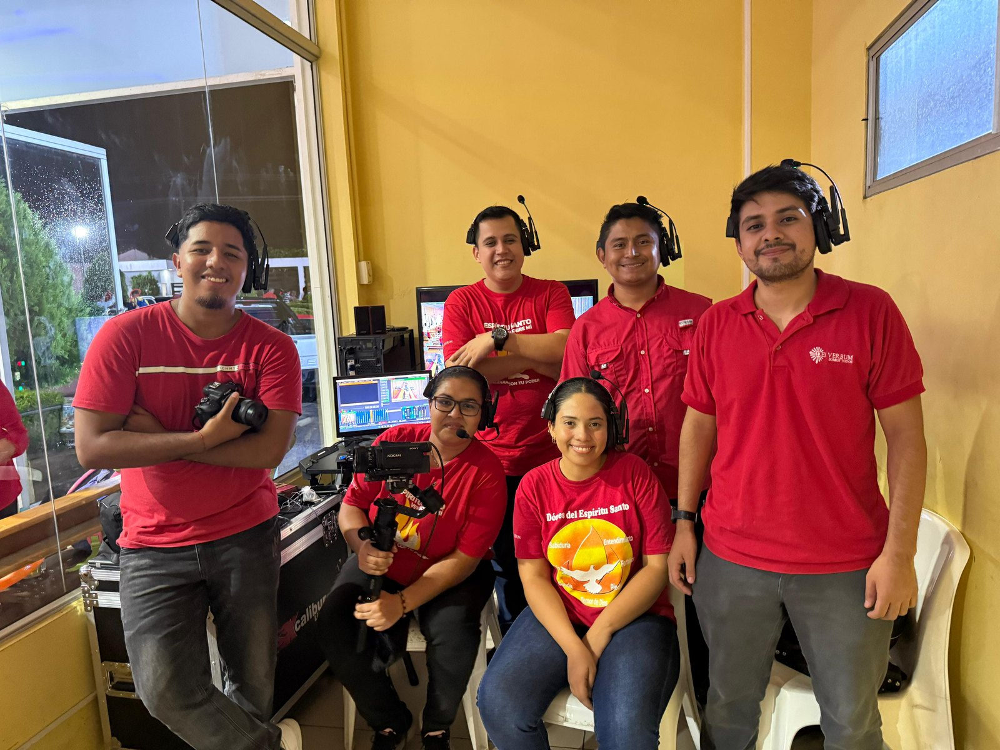
Locutor, camarógrafo, desarrollo y mantenimiento
Servicios profesionales - Proyecto Censo 2024
Consultor, capacitador y desarrollador de proyecto
Vitrina de proyectos
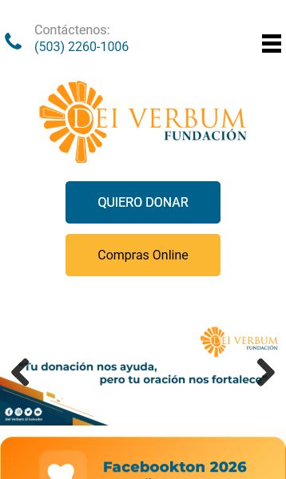
Institucional
Rediseño del sitio institucional, mantenimiento web y soporte técnico continuo.
Visitar sitio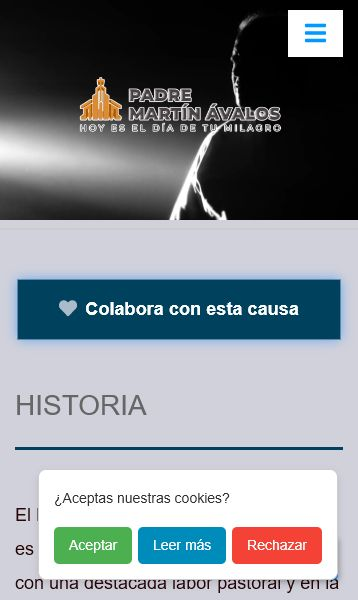
Sitio oficial
Diseño del sitio oficial y actualizaciones constantes de contenido.
Visitar sitio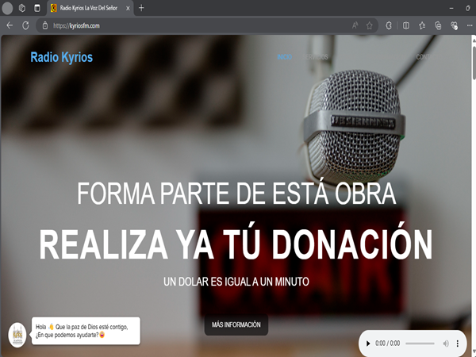
Radio
Website desarrollado para presencia digital y comunicación radial.
Visitar sitio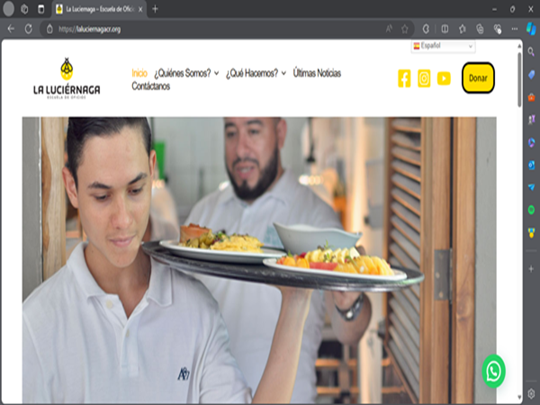
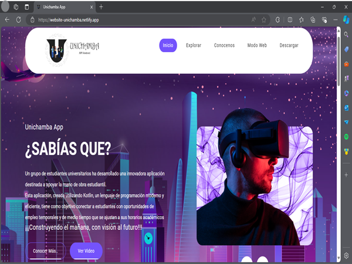
Web app
Sitio estático desarrollado para presentar la plataforma.
Visitar sitio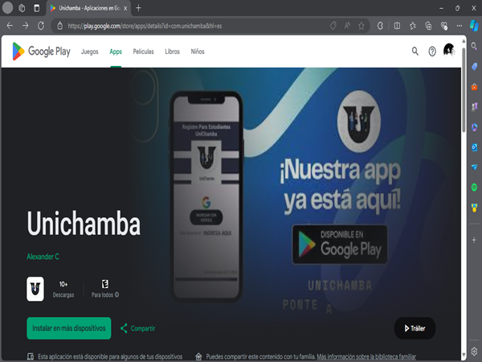
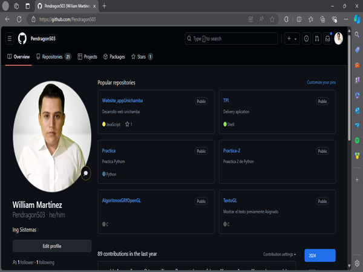
Galería visual
Una selección breve para mostrar el contexto real detrás de la producción multimedia, las transmisiones y las colaboraciones fuera del escritorio.
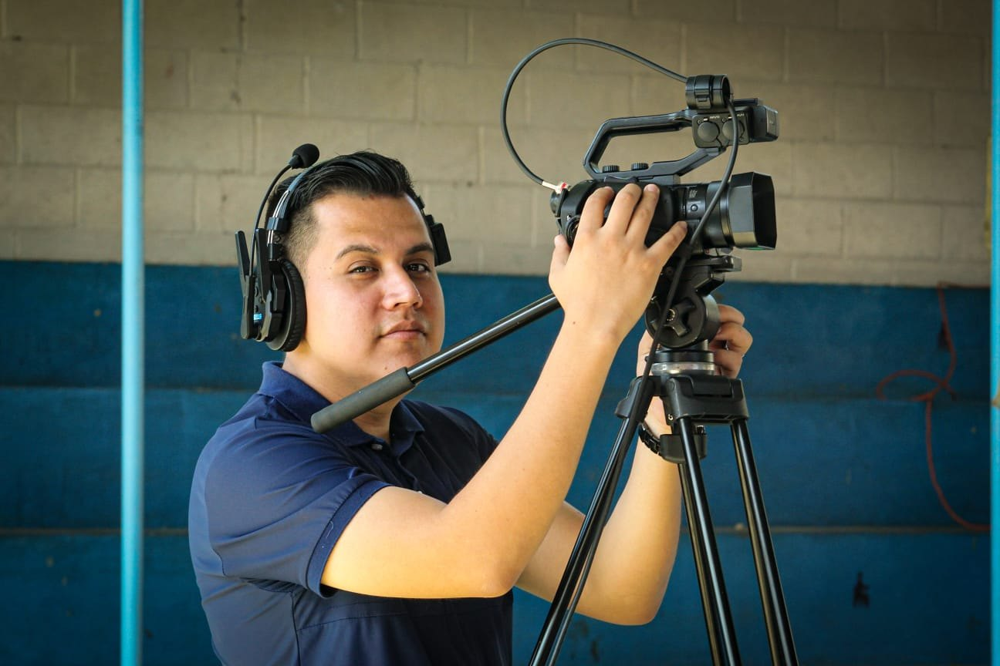
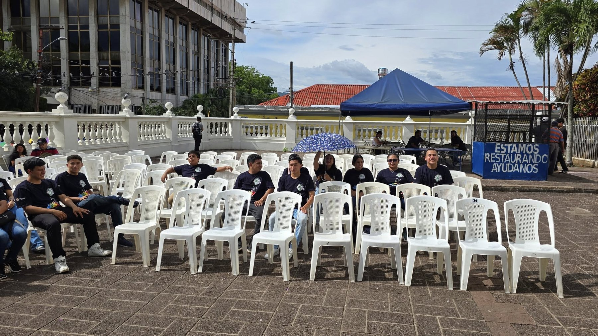
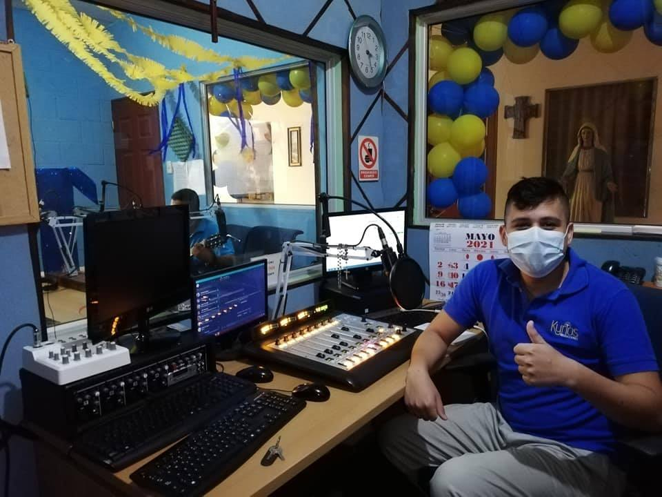
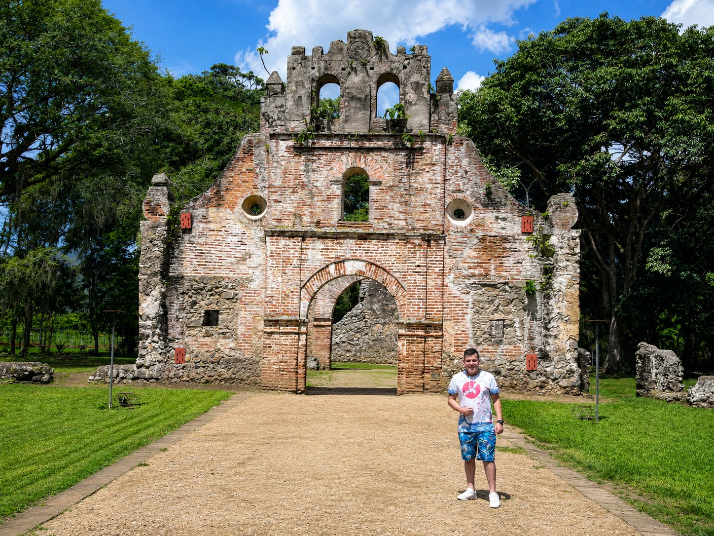
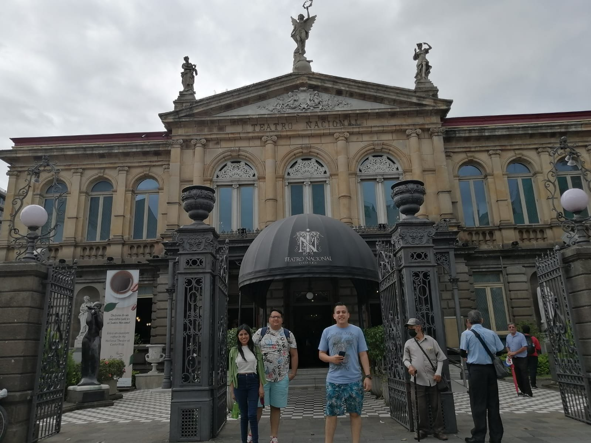
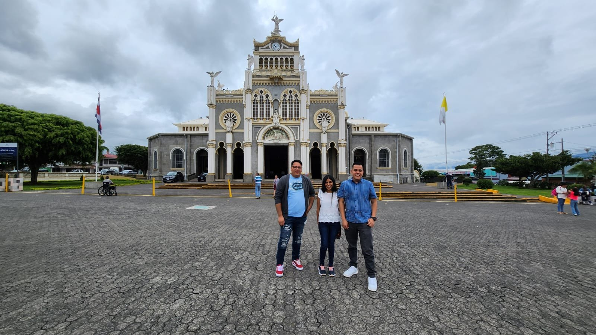
Stack técnico
Contacto
Si tienes una consulta, colaboración o reto técnico, puedes escribirme desde el formulario.